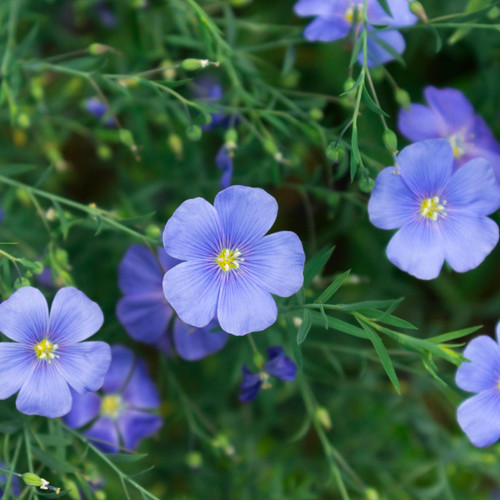

The Ephemeral Blue Flax
I am continually amazed at the beautiful, delicate Blue Flax that somehow took hold in my garden. They are awash in color every monring, yet not a single flower remains by the afternoon. They are the very definition of ephemeral.